PAAD · RNA-seq: contagens brutas (GDC)
STAR - Counts (GENCODE v36) · gerado em 22/10/2026 02:32
47,0 Mtamanho mediano
0,39dispersão mediana α
17.460genes
179amostras tumorais
4amostras normais
0,0%valores faltantes
Fonte: API do GDC (STAR - Counts)
Principais resultados
- Bibliotecas de 19,4 a 85,5 milhões de leituras (mediana 47,0). 43.139 de 60.660 features têm leitura em pelo menos 10% das amostras.
- A variância cresce bem acima da média: a dispersão mediana da binomial negativa é α=0.39 (para features com média > 10). Isso descarta um modelo Poisson e indica binomial negativa (ou Poisson-lognormal) na verossimilhança.
- A fração de zeros é compatível com a binomial negativa (diferença mediana -0,1%); inflação de zeros não parece necessária.
- Em média 9,7% das leituras de cada amostra vão para as 20 features mais abundantes (MT-CO1, MT-ND4, COL1A1).
- Genes codificadores de proteína recebem 97,3% das leituras (mediana).
- 17.460 genes medidos em 183 amostras (179 tumorais e 4 normais); 0,0% dos valores estão faltando.
- Os dois primeiros componentes principais explicam 19,6% e 15,8% da variância das features mais variáveis.
- Correlação mediana entre amostras: 0,67.
- Amostras com correlação muito abaixo das demais (possíveis outliers técnicos): TCGA-3A-A9IO-01, TCGA-3A-A9IV-01, TCGA-3A-A9IN-01, TCGA-3A-A9IL-01, TCGA-2L-AAQM-01, TCGA-3A-A9IJ-01, TCGA-3A-A9IS-01, TCGA-3A-A9IR-01, TCGA-H6-A45N-11, TCGA-F2-6880-01.
- Tumor x normal: 276 genes diferentes com FDR < 5% (190 maiores no tumor, 86 maiores no normal; 4 pacientes têm o par tumor-normal).
- Mais aumentados no tumor: ENSG00000274414.1, ENSG00000043355.12, ENSG00000249395.4, ENSG00000163283.7, ENSG00000133433.11, ENSG00000111291.8, ENSG00000244280.1, ENSG00000111700.13.
- Mais reduzidos no tumor: ENSG00000136732.16, ENSG00000134256.12, ENSG00000186074.19, ENSG00000055070.17, ENSG00000187634.12, ENSG00000113916.18, ENSG00000138061.12, ENSG00000176108.9.
- Associações clínicas com p < 0,05 nos componentes principais: PC1 com estádio (p=0.0062); PC2 com sexo (p=0.049); PC1 com sobrevida (p=0.00015).
Biblioteca
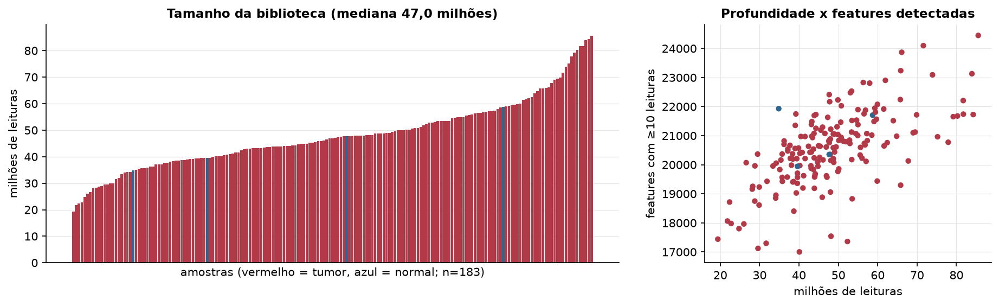
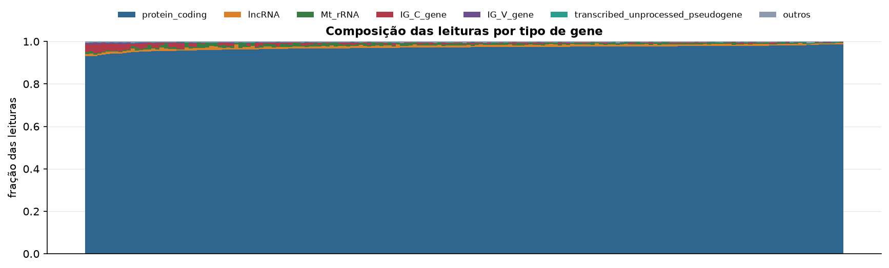
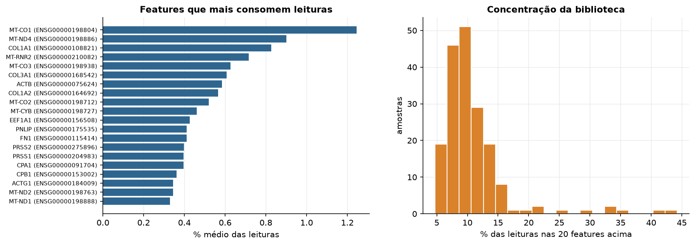
Sobredispersão e zeros
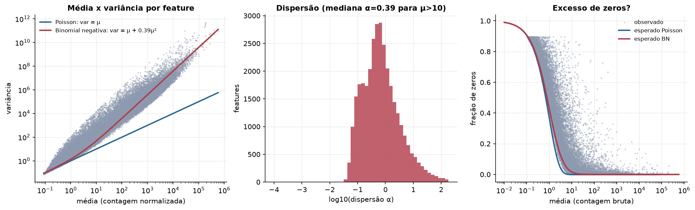
Exploração em log2(CPM+1)
Features com CPM ≥ 1 em pelo menos 20% das amostras (17.460 features).
Distribuição dos valores
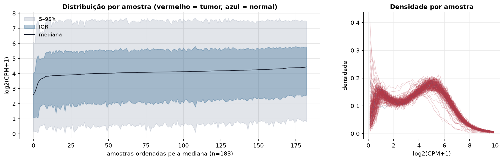
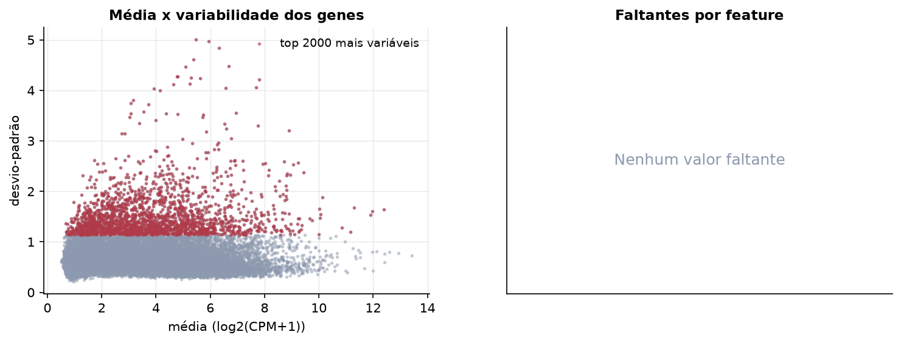
Estrutura das amostras
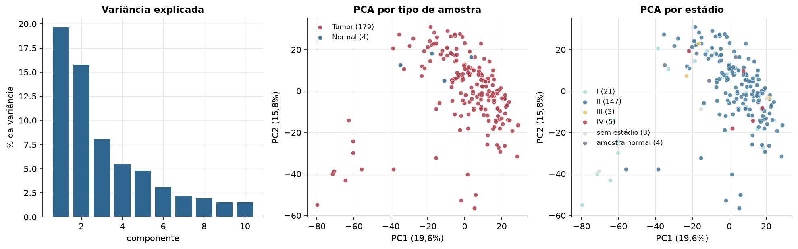
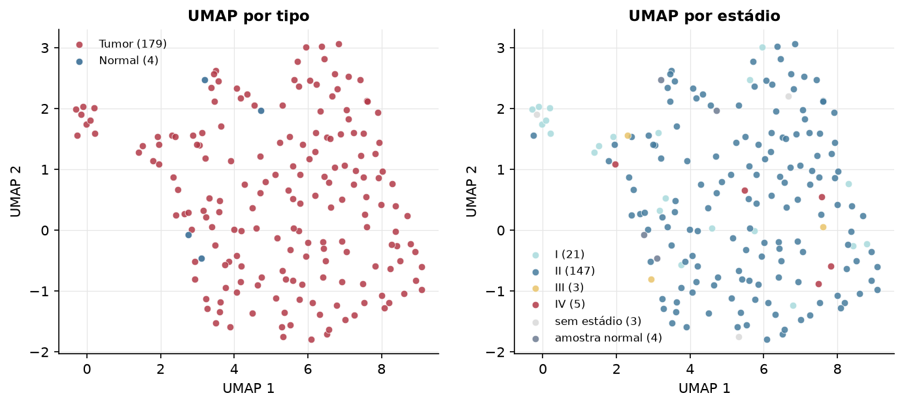
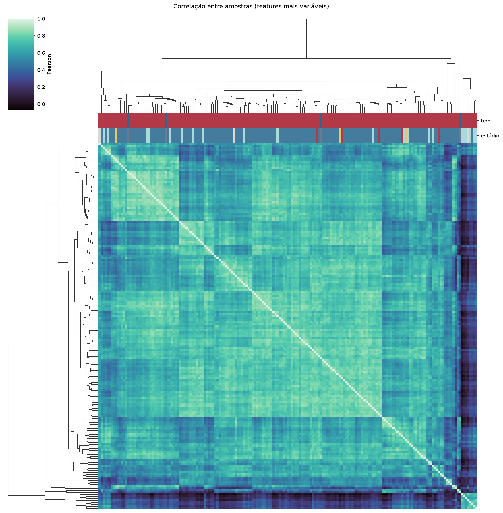
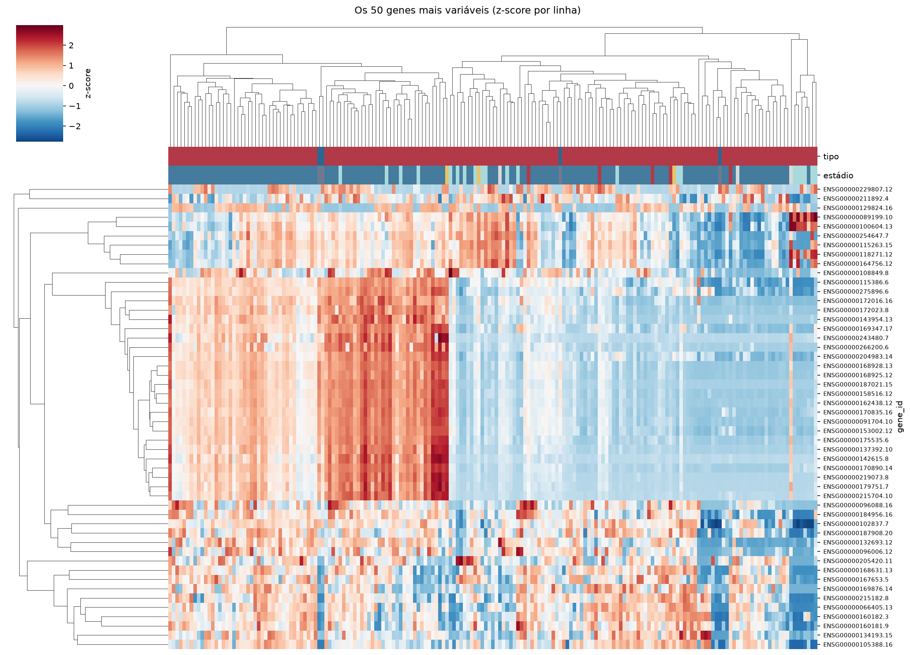
Tumor x normal
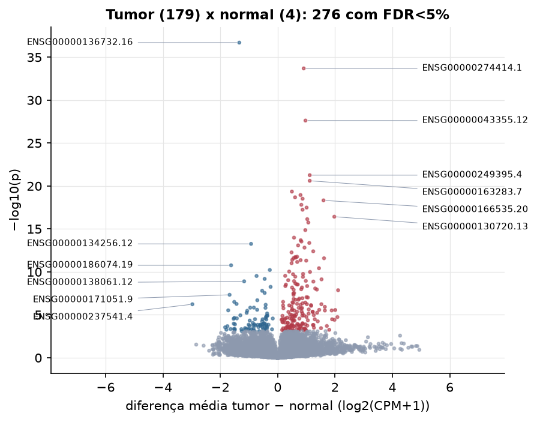
Features mais diferentes entre tumor e normal
| gene_id | diferenca_tumor_menos_normal | t | p | fdr |
|---|---|---|---|---|
| ENSG00000136732.16 | -1.337 | -18.897 | 2.01e-37 | 3.5e-33 |
| ENSG00000274414.1 | 0.909 | 16.746 | 2.01e-34 | 1.76e-30 |
| ENSG00000043355.12 | 0.97 | 13.221 | 2.38e-28 | 1.39e-24 |
| ENSG00000249395.4 | 1.119 | 11.111 | 5.44e-22 | 2.37e-18 |
| ENSG00000163283.7 | 1.119 | 10.816 | 2.45e-21 | 8.54e-18 |
| ENSG00000133433.11 | 0.497 | 10.883 | 4.43e-20 | 1.29e-16 |
| ENSG00000111291.8 | 0.798 | 13.703 | 1.11e-19 | 2.78e-16 |
| ENSG00000244280.1 | 0.607 | 10.712 | 2.07e-19 | 4.51e-16 |
| ENSG00000111700.13 | 0.87 | 10.092 | 3.01e-19 | 5.83e-16 |
| ENSG00000166535.20 | 1.599 | 10.047 | 4.71e-19 | 8.22e-16 |
| ENSG00000259439.2 | 0.825 | 10.214 | 1.53e-18 | 2.43e-15 |
| ENSG00000103355.13 | 1.01 | 10.278 | 3.25e-18 | 4.73e-15 |
| ENSG00000243766.8 | 0.868 | 10.023 | 5.72e-18 | 7.68e-15 |
| ENSG00000130720.13 | 1.976 | 13.439 | 3.74e-17 | 4.66e-14 |
| ENSG00000163286.9 | 1.032 | 9.236 | 7.21e-17 | 8.39e-14 |
| ENSG00000152766.6 | 1.07 | 9.896 | 1.78e-16 | 1.95e-13 |
| ENSG00000233532.6 | 0.965 | 10.475 | 1.36e-15 | 1.4e-12 |
| ENSG00000166589.13 | 0.571 | 8.515 | 1.03e-14 | 9.99e-12 |
| ENSG00000160868.15 | 0.805 | 8.482 | 2.07e-14 | 1.9e-11 |
| ENSG00000105479.16 | 0.83 | 9.647 | 2.92e-14 | 2.55e-11 |
| ENSG00000163586.10 | 1.104 | 8.304 | 4.28e-14 | 3.55e-11 |
| ENSG00000134256.12 | -0.926 | -15.938 | 5.47e-14 | 4.34e-11 |
| ENSG00000281990.1 | 0.713 | 8.437 | 8.23e-14 | 6.25e-11 |
| ENSG00000106384.12 | 0.936 | 10.301 | 1.49e-13 | 1.08e-10 |
| ENSG00000183128.7 | 1.241 | 10.312 | 4.02e-13 | 2.81e-10 |
| ENSG00000167088.11 | 0.485 | 10.165 | 5.36e-13 | 3.6e-10 |
| ENSG00000198610.11 | 0.678 | 8.82 | 1.71e-12 | 1.11e-09 |
| ENSG00000110245.12 | 0.613 | 7.577 | 1.86e-12 | 1.16e-09 |
| ENSG00000163295.5 | 0.629 | 7.541 | 2.18e-12 | 1.31e-09 |
| ENSG00000183690.13 | 0.555 | 9.09 | 2.51e-12 | 1.45e-09 |
Associação com variáveis clínicas
p-valores da associação dos três primeiros componentes principais (só tumores) com estádio (Kruskal-Wallis), sexo (Mann-Whitney), idade (Spearman) e sobrevida global (Cox univariado).
| estádio (Kruskal) | sexo (Mann-Whitney) | idade (Spearman) | sobrevida OS (Cox) | |
|---|---|---|---|---|
| PC1 (19,8%) | 0.006 | 0.567 | 0.429 | 0.000146 |
| PC2 (16,2%) | 0.491 | 0.049 | 0.35 | 0.35 |
| PC3 (8,0%) | 0.939 | 0.557 | 0.636 | 0.544 |